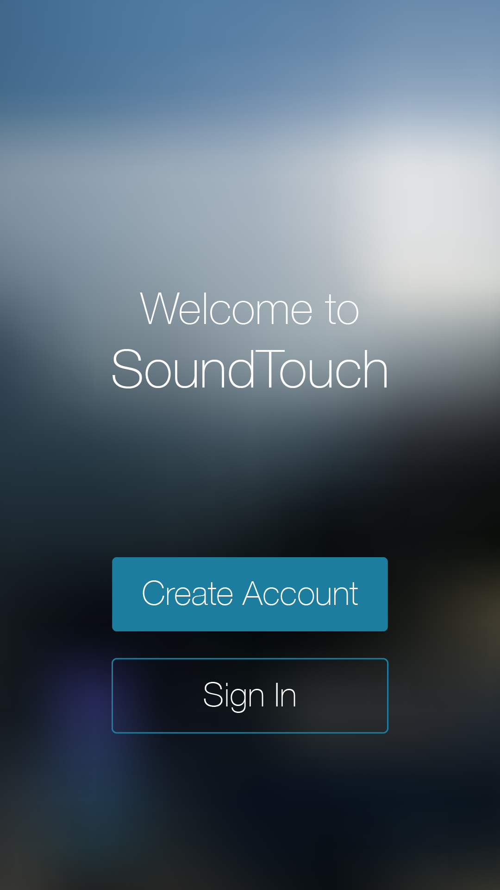

Bose SoundTouch App
Setup Process UI/UX/Visual Redesign (Desktop and Mobile) | 2016
A responsive visual, UI and flow redesign of the setup process of Bose's SoundTouch app. Production logos were replaced with text as per their request.
My tasks included:
- Research and competitive analysis
- Testing the setup process multiple times and noting what could be improved
- Sketching different ideas of improvements
- Creating wireframes and mockups of new UI, flow and visual design to show the team to gather feedback for a different approach
- Creating final mockups and animations to replace unnecessary spinners
- Creating a working prototype of a few screen designs using HTML and CSS
- Implementing all designs into existing code
Made with Adobe Illustrator CC, Adobe Flash Professional CC, HTML5, and CSS3.